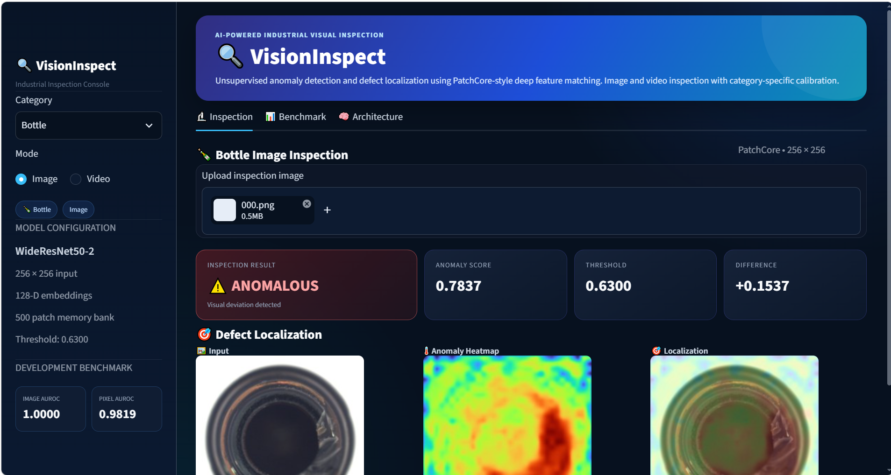
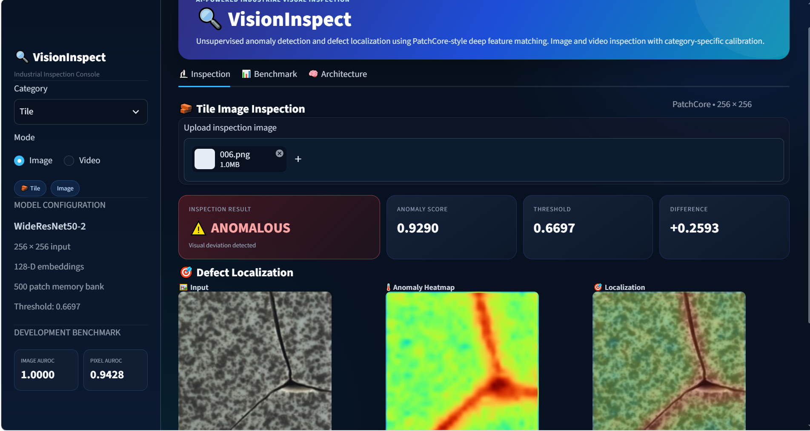

Can Normal Visual Patterns Reveal
Industrial Defects?
An unsupervised visual inspection system
for detecting and localizing industrial
anomalies using deep CNN features,
PatchCore-style nearest-neighbour matching,
and normal-only learning.
Author: Muhammad Talha
PatchCore-style
WideResNet50-2
MVTec AD
Image + Video
VisionInspect investigates whether industrial
defects can be identified without requiring
labeled examples of every possible failure mode.
Instead of learning a conventional binary
classifier, the system builds a representation
of normal visual appearance.
A pretrained WideResNet50-2 extracts multi-scale
convolutional features, local patches are
projected into a compact embedding space, and
representative normal embeddings form a
PatchCore-style memory bank.
At inference time, each test patch is compared
with its nearest normal neighbour. Larger
feature-space distances indicate visual
deviations and are reconstructed spatially to
produce defect-localization heatmaps.
The project evaluates Bottle, Hazelnut and Tile
categories from MVTec AD and also extends the
image pipeline to sampled-frame video
inspection.
Key Results
Development evaluation across the three
implemented MVTec categories.
Average Image AUROC
1.0000
Bottle · Hazelnut · Tile
Average Pixel AUROC
0.9696
Defect-localization performance
Average F1
0.983
Three-category development evaluation
Category
Image AUROC
Pixel AUROC
Deployment Threshold
🍾 Bottle
1.0000
0.9819
0.629979
🌰 Hazelnut
1.0000
0.9841
0.774364
🧱 Tile
1.0000
0.9428
0.669720
Evaluation note.
Threshold diagnostics were inspected during
development, so these results are presented as
development evaluation rather than performance
on a completely untouched final benchmark.
How VisionInspect Works
A normal-only deep visual anomaly detection
pipeline.
1
Normal-only learning
Only normal industrial samples are
required to construct the visual
reference distribution.
2
Deep feature extraction
ImageNet-pretrained WideResNet50-2
produces intermediate layer2 and layer3
feature maps.
3
Multi-scale fusion
Spatially aligned feature maps are
concatenated into 1536-dimensional
local patch representations.
4
Feature projection
Local representations are projected
into a normalized 128-dimensional
embedding space.
5
Normal memory bank
A 500-patch coreset retains
representative embeddings from the
normal training distribution.
6
Nearest-neighbour scoring
Each test patch is scored using its
nearest normal embedding. Larger
distances indicate stronger anomalies.
Visual Inspection Demo
Example outputs from the Streamlit
inspection interface.

Bottle defect localization
An anomalous Bottle sample with
image-level score, calibrated
threshold, anomaly heatmap and
localization overlay.
Hazelnut normal inspection
Category-specific inference using
the Hazelnut memory bank and
calibrated decision threshold.

Tile anomaly inspection
Texture-sensitive anomaly scoring
and pixel-level localization for
the Tile category.
Video inspection
Sampled video frames are evaluated
through the same PatchCore pipeline
to create a temporal anomaly
profile.
Research benchmark dashboard
Category comparison, baseline
evaluation and experimental
development metrics.
Why PatchCore?
A convolutional autoencoder was implemented
first as a reconstruction-based baseline.
Model
Image AUROC
Pixel AUROC
Convolutional Autoencoder
0.8611
0.7184
PatchCore-style
1.0000
0.9819
The baseline showed that reconstruction error
could identify some defects but produced noisy
localization around normal object boundaries.
Deep patch embeddings provided substantially
stronger image-level separation and spatial
localization.
Coreset Ablation
Memory-bank size was varied to study the
accuracy-efficiency trade-off.
Coreset
Image AUROC
Pixel AUROC
Memory
100
1.0000
0.9690
0.049 MB
250
1.0000
0.9793
0.122 MB
500
1.0000
0.9824
0.244 MB
1000
1.0000
0.9840
0.488 MB
A 500-patch memory bank
was selected as the default configuration.
Increasing to 1000 patches provided only a
small localization improvement while doubling
the memory-bank size.
Limitations
VisionInspect learns the visual distribution of
each supported MVTec category rather than the
semantic meaning of an object.
Real-world photographs with different camera
viewpoints, lighting, scale, backgrounds,
product designs or occlusions may therefore
produce false positives.
External Bottle experiments demonstrated this
domain-shift sensitivity.
Deployment in a real production environment
would require normal reference data collected
under the target camera and operating
conditions.
Technology
PythonPyTorchTorchvisionWideResNet50-2PatchCoreOpenCVNumPyScikit-learnMatplotlibStreamlitMVTec AD